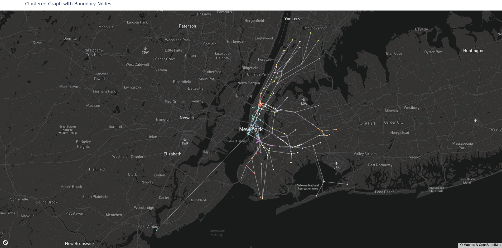
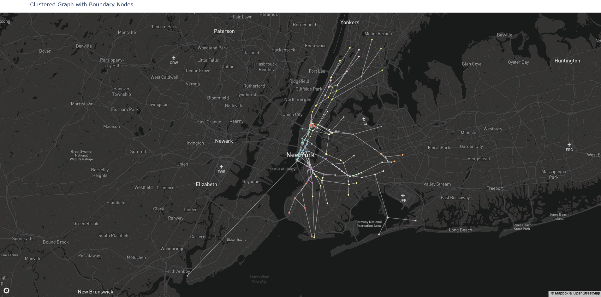

Mason duBoef
Master's Student at UMass Amherst
Research Intern at Jabbr
About Me
I am broadly interested in reinforcement learning, from core RL topics to alignment and multi-objective settings. I have been motivated by problem structures in game-playing, transit, gerrymandering, and subjectively judged sports.
I'm pursuing my Master's in Computer Science at the University of Massachusetts Amherst. I currently do research under Scott Niekum. I have also done research at the Fair and Explainable Decision Making (FED) lab under Yair Zick. I received my Bachelor's in Computer Science from Rensselaer Polytechnic Institute (RPI) where I worked under Lirong Xia.
I am currently seeking a Ph.D. position to start after my graduation in December 2026.
I also work as a research intern at Jabbr, a startup building intelligent camera systems for combat sports. I work on modeling and analyzing judging in boxing. Jabbr's office is based in Shenzhen, China. Last summer I was able to visit a couple times, work in-person, and run a marathon on the Great Wall of China with my fellow Jabbr-ites!
I am originally from Aspen, Colorado. I enjoy a wide range of sports, including skiing, mountain biking, climbing, and running. I currently compete on UMass's men's rugby and club fencing team. I also play quadball for Vermont United and the Boston Forge.
I have a deep love for kung fu movies and rom-coms, especially the early 2000s ones with floppy-haired Hugh Grant. I like live music, especially punk and electronic. I support Liverpool FC and have an ocassional weakness for MMORPGs (WoW and FFXIV). My girlfriend and I have a cat named Goose who likes to stand on people's necks when they're sleeping.
Publications
duBoef, M., Romeas, T., Charbonneau, M., & Nielsen, A. S. Interpretable Prediction and Large-Scale Analysis of Judging in Professional Boxing. (Finalist) MIT Sloan Sports Analytics Conference 2026.
Contact


My Favorite Projects
A selection of personal coding projects. Some polished, some less polished, but all fun and interesting to me!
AI Boxing Judge
Developed an autonomous points-based scoring system for boxing, optimized via gradient descent to reflect the decision-making of professional judges. The system scores rounds with accuracy within the range of professional judges. This contributes a consistent, interpretable, bias-free, and scalable scoring standard for a sport with highly subjective criteria and a long history of controversy. A multilayer perceptron was used as an alternative approach to modeling, achieving comparable accuracy but lacking interpretability.
Both models map stats output by a computer vision system onto judges’ scores. Feature selection (L1 logistic regression), correlation analysis, and analysis of learned weights used to identify what performance factors matter most to judges. Evaluation of top judges and quantification of their stylistic differences.
Finalist for 2026 MIT Sloan Sports Analytics Conference Research Paper Competition.
NYC Subway Challenge
Attempting the find the fastest possible route through all 472 NYC subway stations. In essence, this is a minimum spanning walk problem with a relatively sparse graph of 472 nodes.
This is a long-time project that has grown with me through my undergraduate and graduate career, serving as a great excuse to implement new algorithms and approaches I encounter. I started pursuing this in 2019 at RPI. I led a team of 12 student contributors over 3 semesters at the Rensselaer Center for Open Source (RCOS). We built a model of the subway and experimented with different classical algorithmic approaches (no learning).
At UMass I have reformulated the project, taking an RL-based approach. I use a betweenness clustering to break the subway system into a hierarchical MDP. I apply value iteration to find a near-optimal policy for traversing the subway system.
Shout out to my buddy Siva for these visualizations!
 

Have I Been Gerrymandered?
Gerrymandering is a thing, right.
Well, ever wondered how gerrymandered your district is?
I created an interactive online map that indicates how gerrymandered an individual congressional
district is. To do this I developed a novel extension to efficiency gap, a measure of district fairness given electoral data. This approach successfully identified
Alabama districts that were later ruled unconstitutional by courts.
Algorithmic Fair Allocation for Food Rescue
Pursued as part of the Fair and Explainable Decision Making (FED) lab alongside Paula Navarrete Diaz.
Automated dispatch solution for Rachel’s Table, a food rescue delivering 50k meals per month in Western MA. Automated tool creates scheduled routes for Rachel's Table volunteer drivers, who pick up excess food from donors (ex. restaurants, grocery stores) and deliver it to receiving agencies (ex. food pantries).
Integer linear program, optimized routing to maximize fairness and efficiency, with food allocated to agencies based on their size, while also favoring a balanced distribution of food types and dealing with the stochastic nature of food availability.
Subway Tolling for Congestion Deterrence
Devised optimal toll pricing to deter congestion and promote efficiency on NYC’s 1 Line. Used Nash equilibrium analysis and traffic simulation based on real MTA data.
Stable Matching In OPRA Voting Platform
OPRA is an online platform for preference reporting and aggregation. I extended OPRA's backend to support matching problems and apply different matching algorithms. This was done under Prof. Lirong Xia at RPI (now at Rutgers).
Automatic Door Control
A really cool accessibility project I was able to contribute to under the supervision of Mallory Gaspard at the Rensselaer Center for Open Source (RCOS). An embedded device allows disabled students to open doors remotely via a mobile app.
I built a custom circuit with in-built Arduino. It connects a mobile app to existing door opener systems via Bluetooth, enabling disabled students to open campus doors remotely. I also developed part of the Android application in Kotlin.
Davis-Putnam In Willow
Willow is a web app used to build and assign truth trees. It is largely used in an education context to teach formal logic.
I extended Willow, enabling support for Davis-Putnam type logic problems. This was done under Prof. Bram Van Heuveln at RPI.
Fun Stuff!
A collection of miscellaneous stuff I've put together that needs a home on the internet.
Ranking of Breakfast Burritos in Aspen
Fair warning: Restaurants open and close like every six months in Aspen. Nonetheless, I will attempt to add places in accordance with the shifting sands of the Aspen culinary landscape. Also, when presented with different options for fillings I go with chorizo.
Yet to be ranked: Hometeam, Mama's, Daily Diner, The Tavern, and Fuel
-
#1
Louis Swiss
The north star. Uncomplicated. The platonic ideal of a breakfast burrito.
-
#2
Mollie's
Very fancy. This thang had short rib and came with this mysterious green side sauce. Frickin bomb.
-
#3
520 (Silverpeak Grill)
Large. Lots of chorizo. Really greasy. Great bang for your buck. Sign this to help out Troy, the owner, and keep 520 in town.
-
#4
Grub (Shell Gas Station)
Kinda small but by far the most affordable. The chorizo ones are awesome (the ham not so much). They've got whole peppers in them. You have to get to Shell before 9am or they will be sold out.
-
#5
Spring Cafe
Good in spite of being vegetarian. Pretty big. They have some fake cheese thing going on that's super good. The side salsa is solid. I crave these often. Good cold/leftover.
-
#6
Bear Den
It is pressed so good tortilla texture. They give you guac. Good but mega overpriced ($27) for what it is.
-
#7
Paradise Bakery
Did you know paradise has breakfast burritos? They are pretty solid and reliable. Shout out to Donovan and Alex for bringing this one to light.
-
#8
Big Wrap
Generally solid and affordable. Good meat, the bacon gives a good crunch. However, they just use the pico from the other wraps. In my opinion it doesn't translate super well to the milieu of a breakfast burrito. A different salsa would elevate this shit
-
#9
Hickory House
Good salsa. Very egg heavy. I want more meat and cheese.
-
#10
Silver's
Forgot to take notes on this. It was just ok.
-
#11
Jour de fete
RIP Jour de fete. I miss you. From memory this burrito was meh though.
-
#12
Jüs
More of a weird heath-conscious breakfast "wrap" than a burrito. I don't mess with cherry tomatos in a breakfast burrito. I got the one with ham. They have two others with no meat. Those could be better. Idk.
-
#13
Poppycocks
I like Poppycocks a lot. This was a let down. Salsa all over it so you can't pick it up. You have to use a fork and knife. I'm willing to accept that (ex. Hick House) if the sauce and burrito fundamentals are bangin. This one was not. Get the oatmeal pancakes.
Photography
I have a camera and take photos sometimes!